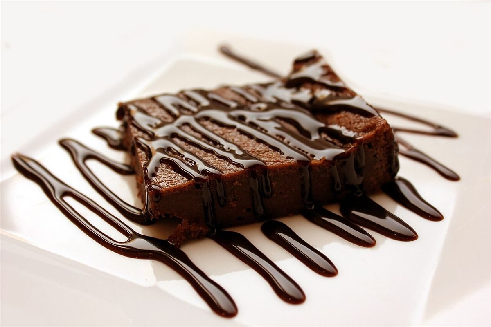

制作側の連想
白地に黒ぶち、の一頭分
店名の「bianco(白)」と「nero(黒)」から、制作側は白地に黒いぶちが散る模様を連想しました。このサイトでは、白い面と黒い面を入れ替えながら、ページごとに「ぶち」の置き場所を変えています。制作側の連想で、お店の理念・由来とは無関係です。店名の由来は分かりません。
写真はイメージです
白の棚と黒の棚
粉・生地・淡い焼き色のものを「白の棚」、ココア・炎・濃い焼き色のものを「黒の棚」に分けました。お店で扱っているものではなく、撮影地不明のフリー素材です。
bianco白の棚


nero黒の棚




ご案内
お店のこと(確認できたものだけ)
| 所在地 | 〒728-0014 広島県三次市十日市南２丁目１５−１４ |
|---|---|
| 電話 | 0824-53-1315 |
| 営業時間 | 準備中 |
| 定休日 | 準備中 |
| ご予約 | 準備中 |
| 駐車場 | 準備中 |
| SNS | Instagram @patisserie_bianco_nero |